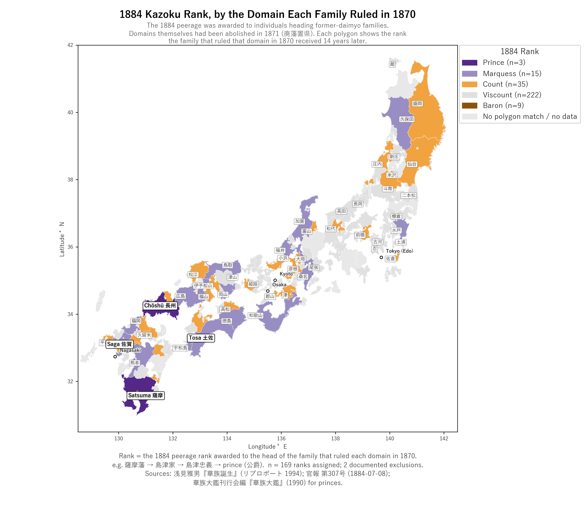

18 kazoku (華族) rank — the institutional side payment
In the paper’s Political Coase Theorem framing, the 1884 kazoku peerage system is the side payment that made the 1871 bargain credible. The daimyō (大名) had surrendered fiscal sovereignty in 1871. By 1884 they had been disarmed, relocated to Tokyo, and stripped of any practical means to resist the central state. The kazoku peerage gave the new arrangement a stable institutional shape: hereditary noble status, formally derived from the Emperor, that the state could not later default on without dismantling its own ceremonial architecture.
This chapter walks the kazoku system — what it was, how the five ranks were assigned, and how it functioned as a credible-commitment mechanism in the broader bargain.
The 1884 ennoblement awarded peerage ranks to individuals heading former-daimyō families — not to domains. Domains (藩, han) had been abolished in 1871 by haihan chiken (廃藩置県), thirteen years before the kazoku Law was promulgated. So when this chapter says “Tosa received marquess,” the literal claim is: Yamauchi Toyonori (山内豊範), the head of the Yamauchi family that had ruled Tosa domain in 1870, received marquess rank from the Imperial Court in 1884.
A useful temporal sequence:
1870 — Hansei Ichiran surveys 286 daimyo domains
│
1871 — Haihan chiken: all domains abolished. Daimyō become interim governors briefly.
│ Domains as political units cease to exist.
│
1869–84 — Former-daimyō families remain as households (家); the family is now
the continuing unit, no longer the domain.
│
1884 — Kazoku Law (華族令): heads of former-daimyō families are awarded one
of five hereditary ranks — 公侯伯子男 (prince, marquess, count,
viscount, baron).
│ The peerage formalises the 1871 bargain into permanent
│ institutional status.Why we map by domain anyway: each polygon on the map is a 1870 domain (a place); the colour shows the rank awarded in 1884 to the family that ruled that domain in 1870. The domain is just a spatial unit for displaying which families got which ranks. Click any polygon in the interactive map to see the actual recipient name.
18.1 Why a peerage at all?
The new Meiji state in 1871 faced a credible-commitment problem. It had just assumed responsibility for paying the hereditary stipends of every former-daimyō family and tens of thousands of their samurai (侍) retainers — an obligation that, by 1875, consumed nearly a third of national revenue (Banno 2010; Gordon 2002). It had every short-term incentive to default once the daimyō were powerless to enforce the bargain. The question was: why wouldn’t it?
Three mechanisms together provided the answer:
- The 1869 founding of the kazoku status merged the former-daimyō with the existing kuge (公家) court aristocracy into a single national peerage formally derived from the Emperor. Status became Emperor-granted, not domain-derived, anchoring it to the regime’s own legitimacy.
- The 1884 kazoku Law (華族令) formalised the five hereditary ranks with explicit assignment rules, converting the loose 1869 status into a structured institutional class with documented inheritance.
- The 1889 Meiji Constitution wrote the kazoku into the House of Peers (貴族院, kizoku-in) — the upper chamber of the new legislature. From 1889 onwards, defaulting on kazoku status meant dismantling part of the state’s own legislative architecture.
The 1884 ranks are step 2 in that sequence — the moment the loose kazoku status acquired its precise institutional shape.
18.2 The five ranks
| Rank | Kanji | Rough English | N from former-daimyō families |
|---|---|---|---|
| Prince / Duke | 公爵 (kōshaku) | Prince / Duke | 3 |
| Marquess | 侯爵 (kōshaku — different kanji, same reading) | Marquess | 15 |
| Count | 伯爵 (hakushaku) | Count / Earl | 35 |
| Viscount | 子爵 (shishaku) | Viscount | 222 |
| Baron | 男爵 (danshaku) | Baron | 9 |
(Counts here are for the former-daimyō track only; the 1884 ennoblement also included kuge court nobility on a parallel track.)
Both prince (公爵) and marquess (侯爵) are romanised kōshaku — they sound identical but use different kanji. They are different ranks. Context disambiguates.
18.3 The assignment rule
The 1884 law was vague on assignment; the internal 叙爵内規 (jōshaku naiki, “internal assignment rules”) supplied the quantitative thresholds:
| Threshold | Rank |
|---|---|
| ≥ 150,000 koku | Marquess |
| 50,000 – 149,999 koku | Count |
| < 50,000 koku | Viscount |
| (Special — see below) | Prince |
Most former-daimyō were assigned mechanically by their domain’s revenue base: large → marquess, medium → count, small → viscount.
Prince was reserved by specific clauses for:
- The Tokugawa main line (徳川宗家) — Tokugawa-main-line exception
- The five sekke (摂家) kuge court houses (近衛, 鷹司, 九条, 一条, 二条) — applies to court not daimyō
- 島津家 (Satsuma) and 毛利家 (Chōshū) — explicit Restoration-leader reward
- A handful of later upgrades (e.g., 伊藤博文, 1907)
18.4 The plot twist — the threshold operates on genmai, not sōdaka (草高)
The threshold rule above is usually summarised with sōdaka (sōdaka, the nominal yield assessment). Under that reading, 仙台藩 (Sendai, the Date family) at ~620,000 koku should have got marquess but received count — and that gap was traditionally read as a Boshin punishment for joining the Northern Alliance.
Asami (1994) shows the threshold was actually applied to genmai (現米) — the post-1869 tax-reported actual rice flow, which is much smaller than sōdaka for most domains. Sendai’s genmai was ~67,740 koku — squarely in count range. By the genmai rule, Sendai’s rank is mechanical, not punishment. Aizu’s post-Boshin remnant 斗南藩 (Tonami) is similarly mechanical: its genmai of ~7,380 koku put it in viscount range. The territorial reduction of Aizu was the punishment; the rank assignment just followed.
This re-baseline matters for any descriptive interpretation of the 1884 rank pattern. Under the sōdaka reading, 93 domains look like deviations from the rule. Under the genmai reading, only 19 do — and those 19 fall into a clean set of named exception clauses (gosanke clause for Mito, Tokugawa-main clause for Shizuoka, Restoration-leader clause for Satsuma+Chōshū, post-1868-elevation rule for the eight 付家老 / 旗本 elevations). The data documents an institutional architecture, not a discretionary rewards-and-punishments scheme. The 19 cases are walked through in chapter 07.
18.5 Map: 1884 kazoku rank

18.6 How to read this map
- The purple cluster in Kyushu and at the western Honshu tip (薩摩, 長州) is the Restoration coalition that got the prince and marquess promotions.
- The orange cluster in the north — 仙台, 米沢, 盛岡, the post-Boshin Aizu remnant 斗南 — is mostly former Northern Alliance members at count rank. Read together with the fiscal-distress data, the count rank for these houses is the side-payment side of the bargain: the post-Boshin territorial reductions had been the cost; the kazoku rank is the institutionalised compensation.
- Light purple (marquess) is scattered — large tozama (加賀, 土佐, 佐賀, 熊本, 広島, 岡山, 福岡, 徳島, 秋田) plus the gosanke (尾張, 紀伊, 水戸).
- Viscount is everywhere small — the 222 small-to-medium domains that cleared the threshold.
- Brown (baron) is the 9 post-1868 elevations — former 付家老 (tsukegarō) and 旗本 (hatamoto) who became independent daimyō only at the Restoration. Their baron rank reflects pre-Restoration baishin (陪臣) status, not Boshin alignment.
18.7 The kazoku as credible commitment
The paper’s reading of the 1884 ranks is institutional, not predictive. The ranks themselves were the instrument of the political bargain — the visible, hereditary, Emperor-derived status that bound the former-daimyō families to the new regime’s success. By 1889 the constitutional architecture made this binding explicit: prince and marquess seats in the House of Peers were automatic and hereditary; count, viscount, and baron seats were elected from within each rank. The state could not default on kazoku status without simultaneously destroying its own upper chamber. That is the credible-commitment mechanism the paper identifies.
Primary record: Kanpō 第307号 (1884-07-08) and 第308号 (1884-07-09), NDL Digital Collections (pids 2943511 and 2943512) — the government gazettes publishing the ennoblement decree. Project verbatim transcription: the imperial decree text + 83-person merit-track ennoblement roster + 10 AM 1884-07-07 ceremony procedure are transcribed in primary_source_transcriptions/kazoku_rei_decree_kanpo_307.md. The transcription documents two findings worth noting here: (1) the decree’s dual rationale (lineage track + merit track) is encoded in its founding text; (2) all 16 senior-merit (勳一等) Counts on 1884-07-07 were drawn from the focal-4 han (7 Satsuma + 6 Chōshū + 2 Tosa + 1 Saga), confirming the focal-han coalition’s continuity from haihan-chiken (1871) into the kazoku-rei (1884).
Sendai-Date hybrid framing (new 2026-05-25): 從五位 伊達宗基 received Count rank in the Kanpō #307 roster as 「依父勳功特授伯爵」 — formally categorized as merit-track ennoblement inherited from his father’s service. This is a third interpretive frame for Sendai’s rank, complementing Lebra’s Boshin-penalty reading and Asami’s genmai-mechanical reading — see the 19 deviations chapter for discussion.
Scholarly synthesis: 浅見雅男『華族誕生 名誉と体面の明治 (Kazoku tanjō: meiyo to taimen no Meiji, “Birth of the Peerage: Honor and Reputation in Meiji”)』リブロポート (1994) — backs the assignment-rule reconstruction and the genmai / sōdaka distinction. 華族大鑑刊行会編『華族大鑑 (Kazoku taikan, “Compendium of the Peerage”)』(1990) — primary source for the prince-rank ennoblements. 小田部雄次『華族 近代日本貴族の虚像と実像 (Kazoku: kindai Nihon kizoku no kyozō to jitsuzō, “The Peerage: Image and Reality of the Modern Japanese Aristocracy”)』中公新書 (2006) — secondary kazoku reference. 松田敬之『〈華族爵位〉請願人名辞典 (Kazoku shakui seigan jinmei jiten, “Dictionary of Peerage-Title Petitioners”)』吉川弘文館 (2015) — definitive on 1884 exclusions.
Actor perspective on chitsuroku→kazoku-rei sequencing: Kido Takayoshi’s contemporaneous diary records his August 1876 opposition to chitsuroku-shobun timing and Itō Hirobumi’s overruling. The diary explicitly attributes the 8-year gap (1876 → 1884) between chitsuroku-shobun and kazoku-rei to Itō’s “political tactics” calculus. Project transcription: kido_takayoshi_chitsuroku_shobun_diary.md. The chitsuroku-shobun decree itself: chitsuroku_shobun_decree_1876.md.
Institutional architecture: Beckmann (1957) on the 1889 Constitution and the House of Peers. Beasley, The Meiji Restoration (1972), ch. XI.